上一節課，我們介紹了 Logistic Regression 問題，建立 cross-entropy error，並提出使用梯度下降演算法 gradient descent 來獲得最好的 logistic hypothesis。本節課繼續介紹使用線性模型來解決分類問題。
# Linear Models for Binary Classification
之前介紹幾種線性模型都有一個共同點，就是都有樣本特徵 x 的加權運算，我們引入一個線性得分函數 s: 的三種線性模型。
第一種是 linear classification 。線性分類模型的 hypothesis 為, 取值範圍為 {-1,+1} 兩個值，它的 err 是 0/1 的，所以對應的 是離散的，並不好解，這是個 NP-hard 問題。
第二種是 linear regression 。線性回歸模型的 hypothesis 為，取值範圍為整個實數空間，它的 err 是 squared 的，所以對應的 是開口向上的二次曲線，其解是 closed-form 的，直接用線性最小平方法求解即可。
第三種是 logistic regression 。邏輯回歸模型的 hypothesis 為，取值範圍為 (-1,1) 之間，它的 err 是 cross-entropy 的，所有對應的 是平滑的凸函數，可以使用梯度下降演算法求最小值。
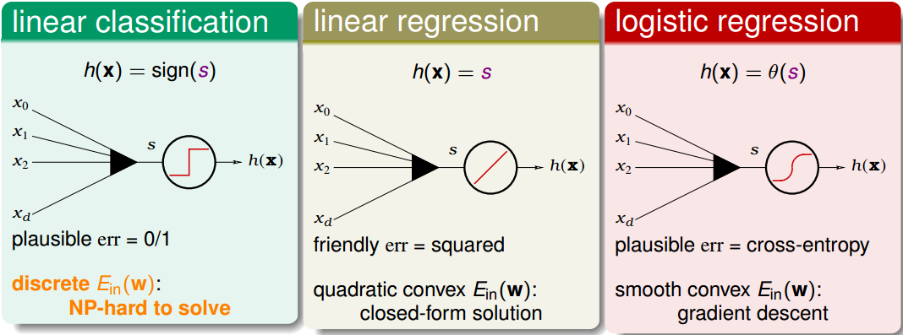
從上圖中發現， linear regression 和 logistic regression 的 error function 都有最小解。下面，我們來對這三種模型的 error function 進行分析，看看它們之間有什麼聯繫。
對於
linear classification，它的error function可以寫成：對於
linear regression，它的error function可以寫成：對於
logistic regression，它的error function可以寫成：
上述三種模型的error function都引入了 ys 變數 (分類的正確率得分)，其值越大越好，得分越高。
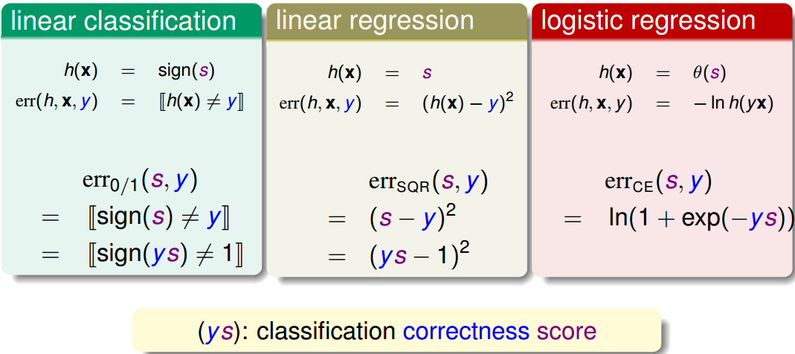
下面，我們用圖形化的方式來解釋三種模型的error function到底有什麼關係：
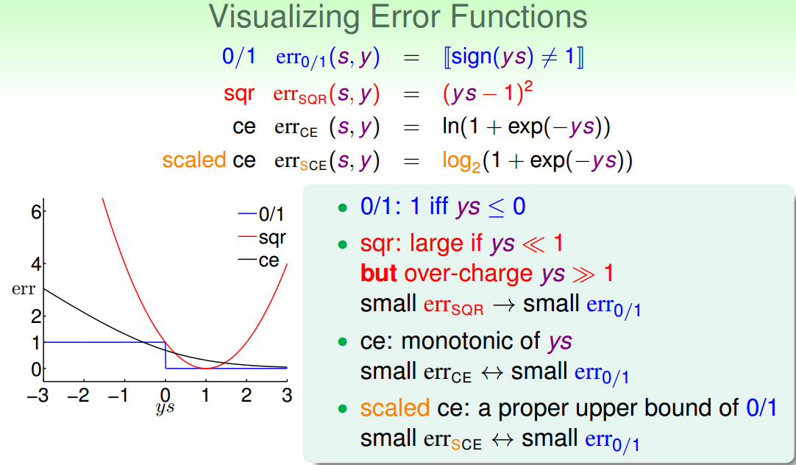
從上圖中可以看出，ys 是橫坐標軸， 是呈階梯狀的，在 時， 恆取最小值 0。 呈抛物線形式，在 時，取得最小值，且在 左右很小區域內， 和 近似。 是呈指數下降的單調函數，ys 越大，其值越小。同樣在 左右很小區域內， 和 近似。但是我們發現 並不是始終在 之上，所以為了計算討論方便，我們把 做幅值上的調整，引入，這樣能保證 始終在 上面，如下圖所示：
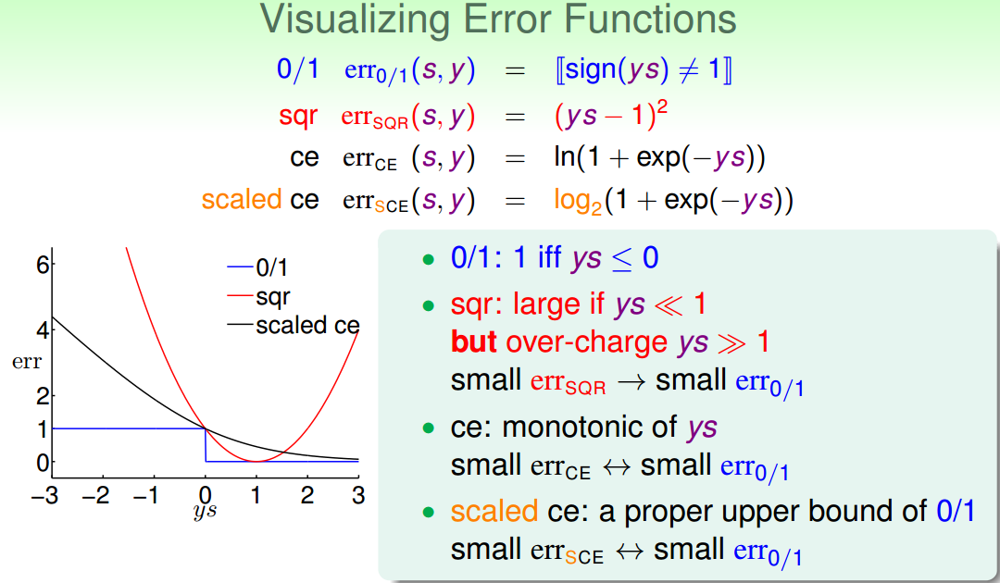
由上圖可以看出：
那麼由 VC 理論可以知道：從 0/1 出發：
從 CE 出發：
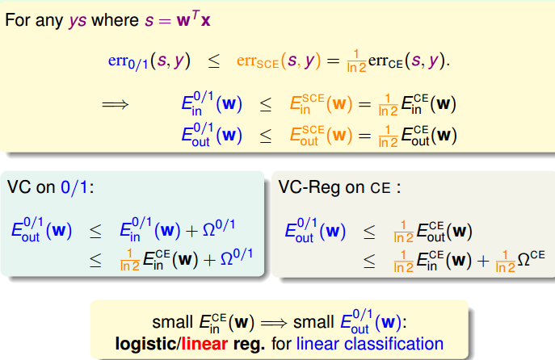
通過上面的分析，我們看到 err 0/1 是被限定在一個上界中。這個上界是由logistic regression模型的error function決定的。而linear regression其實也是linear classification的一個upper bound，只是隨著 sy 偏離 1 的位置越來越遠，linear regression的error function偏差越來越大。
綜上所述，linear regression和logistic regression都可以用來解決linear classification的問題。
下圖列舉了 PLA 、 linear regression 、 logistic regression 模型用來解 linear classification 問題的優點和缺點。通常，我們使用 linear regression 來獲得初始化的，再用 logistic regression 模型進行最優化解。
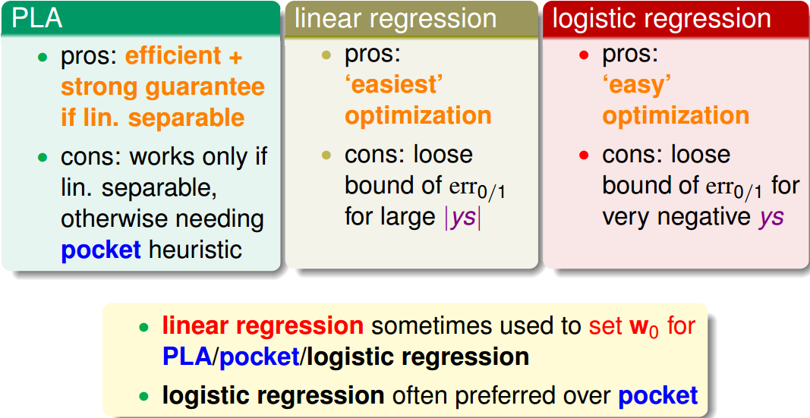
# Stochastic Gradient Descent
之前介紹的 PLA 演算法和 logistic regression 演算法，都是用到了反覆運算操作。PLA 每次反覆運算只會更新一個點，它每次反覆運算的時間複雜度是；而 logistic regression 每次反覆運算要對所有 N 個點都進行計算，它的每時間複雜度是。為了提高 logistic regression 中 gradient descent 演算法的速度，可以使用另一種演算法：隨機梯度下降演算法 Stochastic Gradient Descent 。
隨機梯度下降演算法每次反覆運算只找到一個點，計算該點的梯度，作為我們下一步更新 的依據。
這樣就保證了每次反覆運算的計算量大大減小，我們可以把整體的梯度看成這個隨機過程的一個期望值。
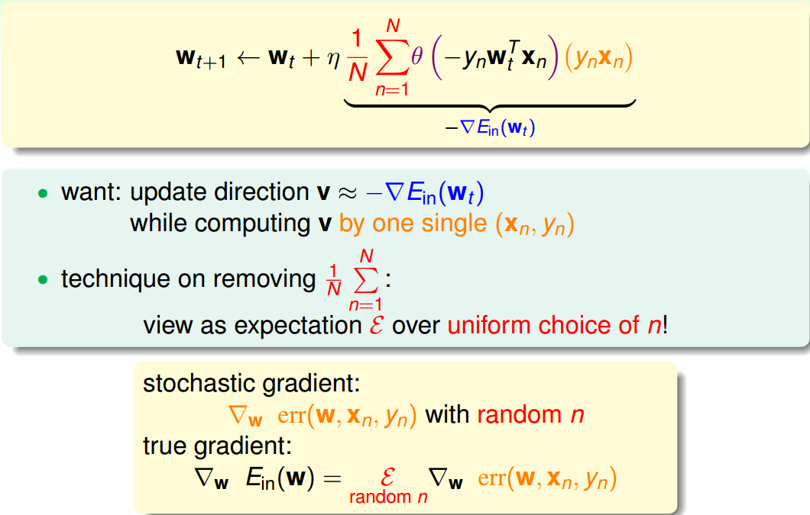
隨機梯度下降可以看成是真實的梯度加上均值為零的隨機雜訊方向。單次反覆運算看，好像會對每一步找到正確梯度方向有影響，但是整體期望值上看，與真實梯度的方向沒有差太多，同樣能找到最小值位置。
隨機梯度下降的優點是減少計算量，提高運算速度，而且便於 online 學習；缺點是不夠穩定，每次反覆運算並不能保證按照正確的方向前進，而且達到最小值需要反覆運算的次數比梯度下降演算法一般要多。
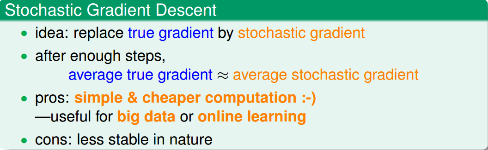
對於 logistic regression 的 SGD ，它的運算式為：
我們發現，SGD 與 PLA 的反覆運算公式有類似的地方，如下圖所示：
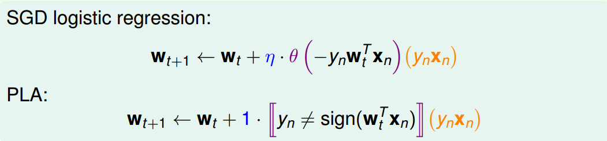
我們把 SGD logistic regression 稱之為 soft PLA ，因為 PLA 只對分類錯誤的點進行修正，而 SGD logistic regression 每次反覆運算都會進行或多或少的修正。另外，當，且 足夠大的時候， PLA 近似等於 SGD 。
除此之外，還有兩點需要註明：
- SGD 的終止反覆運算條件。沒有統一的終止條件，一般讓反覆運算次數足夠多。
- 學習率。 的取值是根據實際情況來定的，一般取值 0.1 就可以了。
# Multiclass via Logistic Regression
本節主要介紹多分類問題，通過 linear classification 來解決。
假設平面上有四個類，分別是正方形、菱形、三角形和星形，如何進行分類模型的訓練呢？
首先我們可以想到這樣一個辦法，就是先把正方形作為正類，其他三種形狀都是負類，即把它當成一個二分類問題，通過 linear classification 模型進行訓練，得出平面上某個圖形是不是正方形，且只有 {-1,+1} 兩種情況。
然後，再分別以菱形、三角形、星形為正類，進行二元分類。這樣進行四次二分類之後，就完成了這個多分類問題。
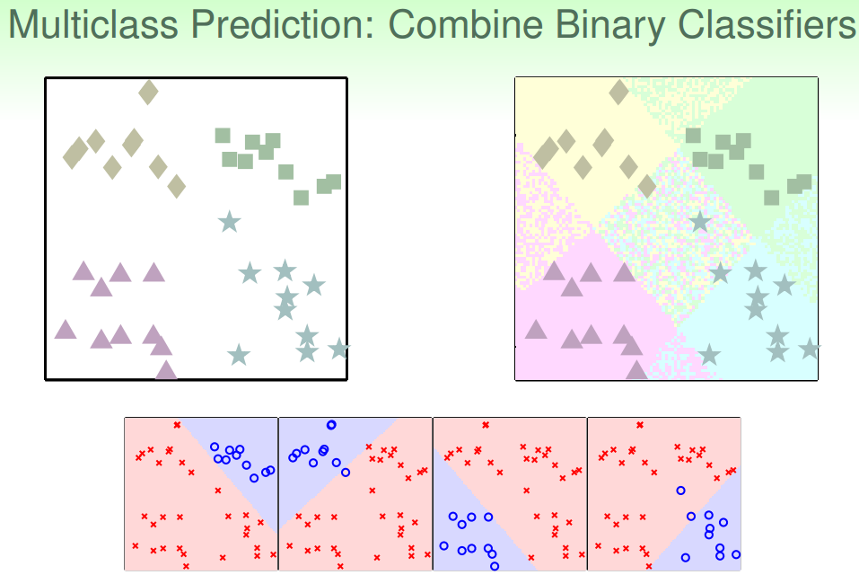
但是，這樣的二分類會帶來一些問題，因為我們只用 {-1，+1} 兩個值來標記，那麼平面上某些可能某些區域都被上述四次二分類模型判斷為負類，即不屬於四類中的任何一類；也可能會出現某些區域同時被兩個類甚至多個類同時判斷為正類，比如某個區域又判定為正方形又判定為菱形。那麼對於這種情況，我們就無法進行多類別的準確判斷，所以對於多類別，簡單的 binary classification 不能解決問題。
針對這種問題，我們可以使用另外一種方法來解決：soft 軟性分類，即不用 {-1，+1} 這種 binary classification ，而是使用 logistic regression ，計算某點屬於某類的概率、可能性，去概率最大的值為那一類就好。soft classification 的處理過程和之前類似，同樣是分別令某類為正，其他三類為負，不同的是得到的是概率值，而不是 {-1，+1}。最後得到某點分別屬於四類的概率，取最大概率對應的哪一個類別就好。效果如下圖所示：
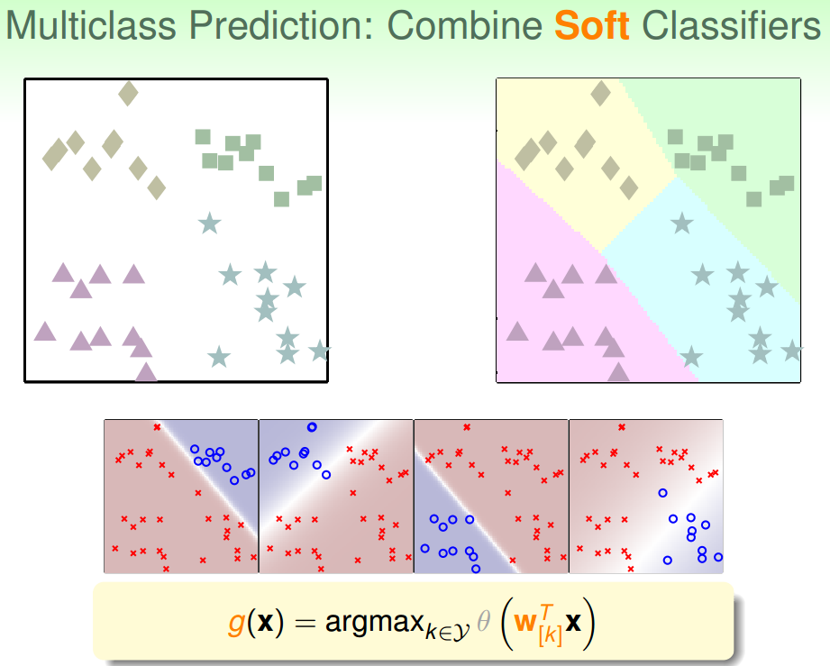
這種多分類的處理方式，我們稱之為 One-Versus-All(OVA) Decomposition 。這種方法的優點是簡單高效，可以使用 logistic regression 模型來解決；缺點是如果資料類別很多時，那麼每次二分類問題中，正類和負類的數量差別就很大，資料不平衡 unbalanced ，這樣會影響分類效果。但是，OVA 還是非常常用的一種多分類演算法。
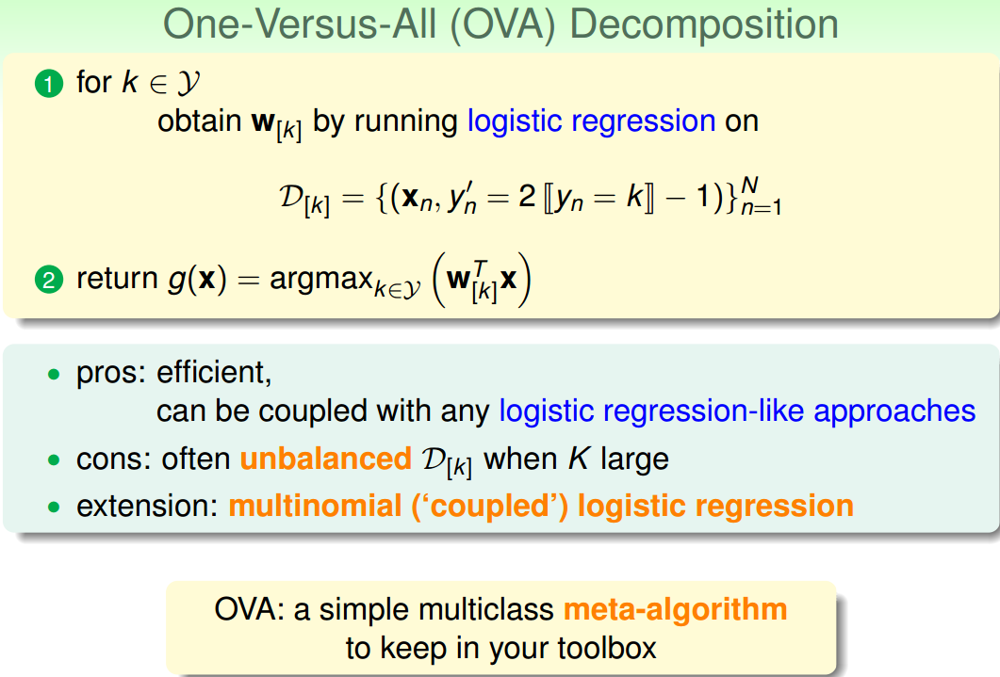
# Multiclass via Binary Classification
上一節，我們介紹了多分類演算法 OVA，但是這種方法存在一個問題，就是當類別 k 很多的時候，造成正負類資料 unbalanced ，會影響分類效果，表現不好。現在，我們介紹另一種方法來解決當 k 很大時，OVA 帶來的問題。
這種方法呢，每次只取兩類進行 binary classification ，取值為 {-1，+1}。假如 k=4，那麼總共需要進行 次 binary classification 。那麼，六次分類之後，如果平面有個點，有三個分類器判斷它是正方形，一個分類器判斷是菱形，另外兩個判斷是三角形，那麼取最多的那個，即判斷它屬於正方形，我們的分類就完成了。
這種形式就如同 k 個足球對進行單迴圈的比賽，每場比賽都有一個隊贏，一個隊輸，贏了得 1 分，輸了得 0 分。那麼總共進行了 次的比賽，最終取得分最高的那個隊就可以了。
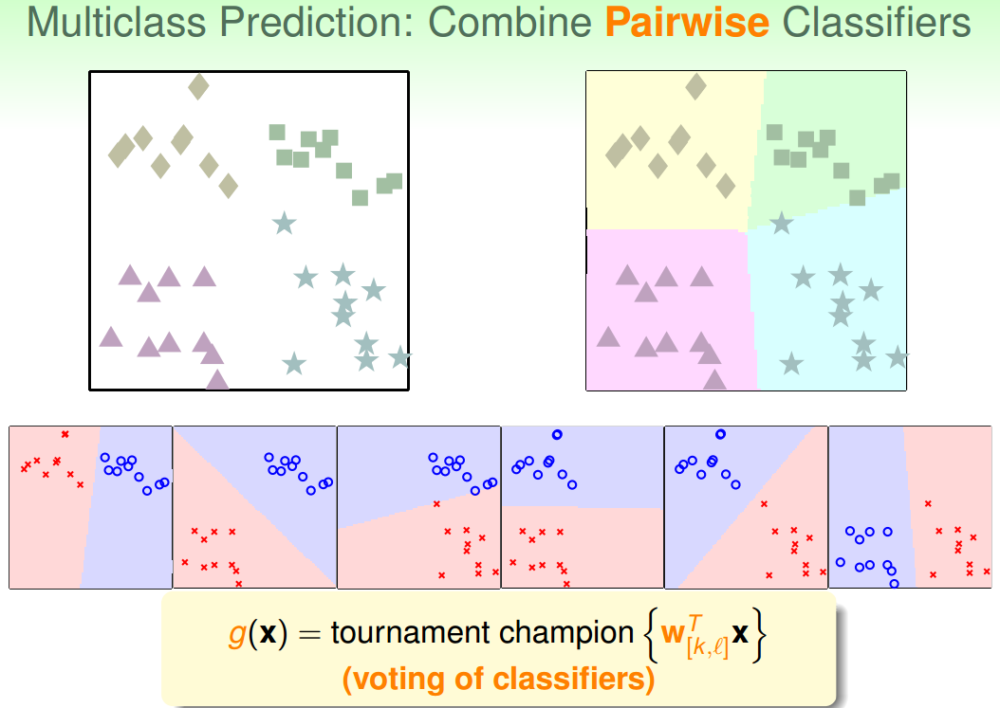
這種區別於 OVA 的多分類方法叫做 One-Versus-One(OVO) 。這種方法的優點是更加高效，因為雖然需要進行的分類次數增加了，但是每次只需要進行兩個類別的比較，也就是說單次分類的數量減少了。而且一般不會出現資料 unbalanced 的情況。缺點是需要分類的次數多，時間複雜度和空間複雜度可能都比較高。
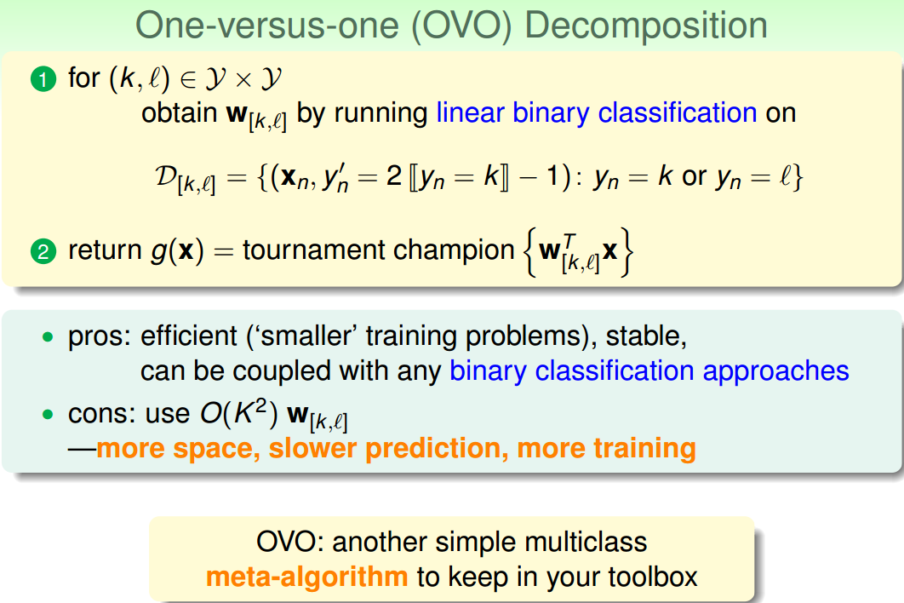
# Conclusion
本節課主要介紹了分類問題的三種線性模型： linear classification 、 linear regression 和 logistic regression 。首先介紹了這三種 linear models 都可以來做 binary classification 。然後介紹了比梯度下降演算法更加高效的 SGD 演算法來進行 logistic regression 分析。最後講解了兩種多分類方法，一種是 OVA，另一種是 OVO。這兩種方法各有優缺點，當類別數量 k 不多的時候，建議選擇 OVA，以減少分類次數。